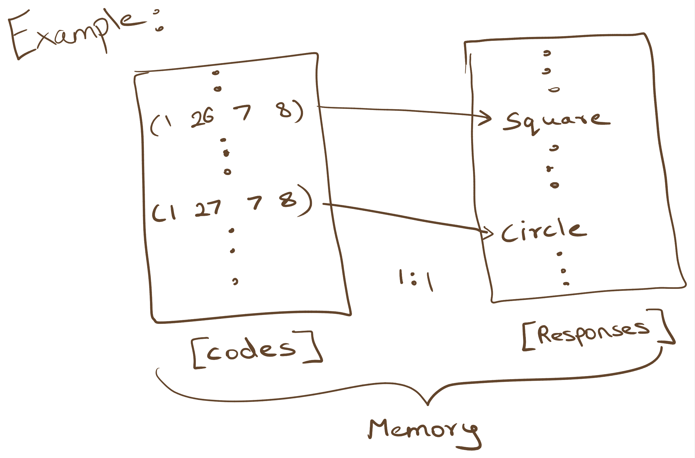
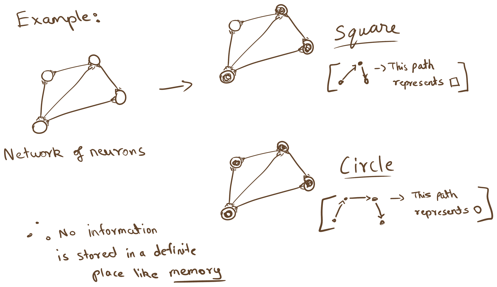
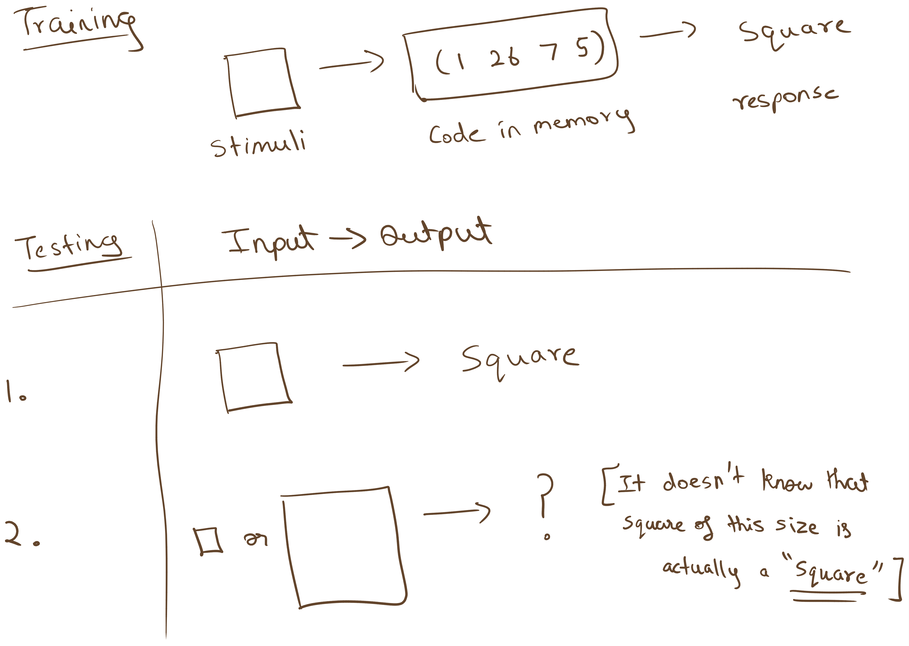
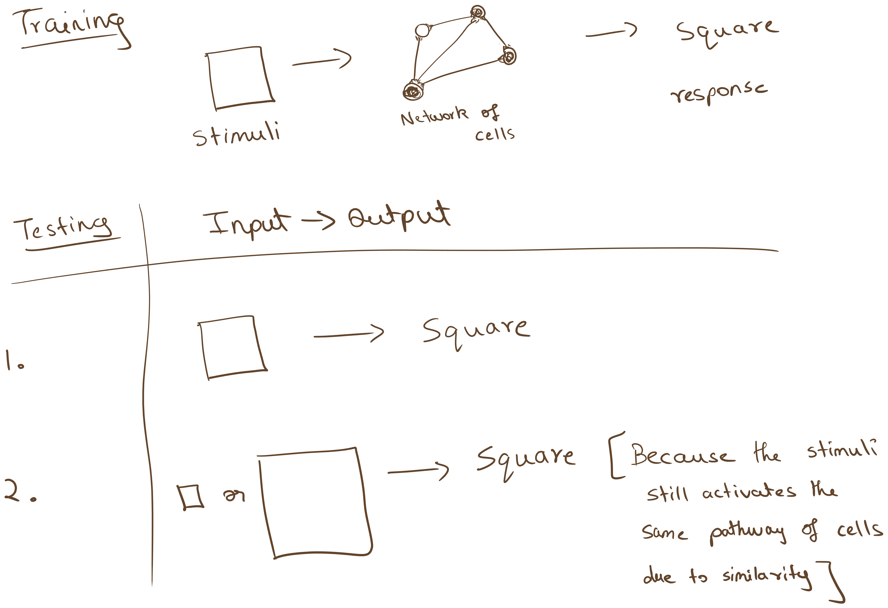
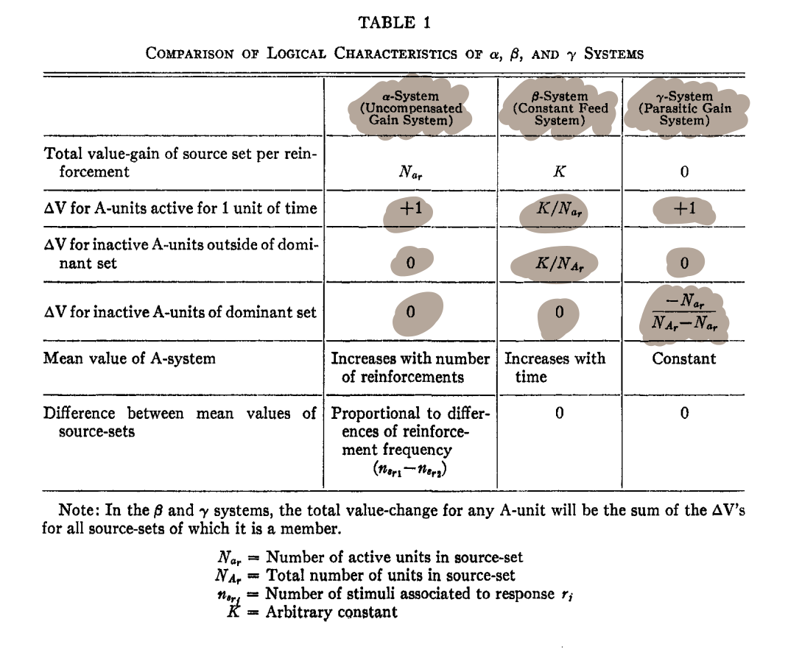
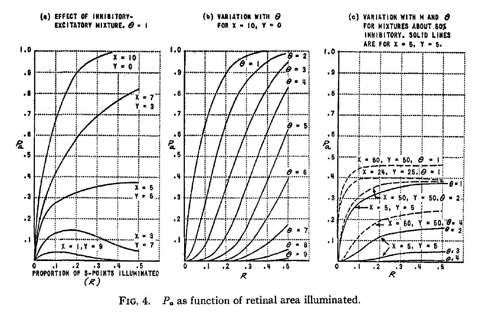
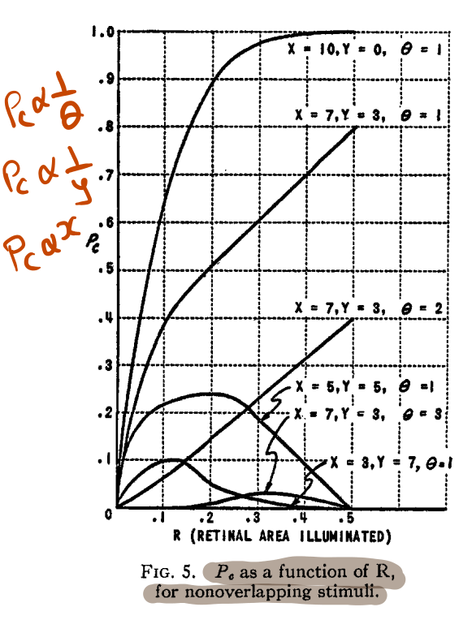
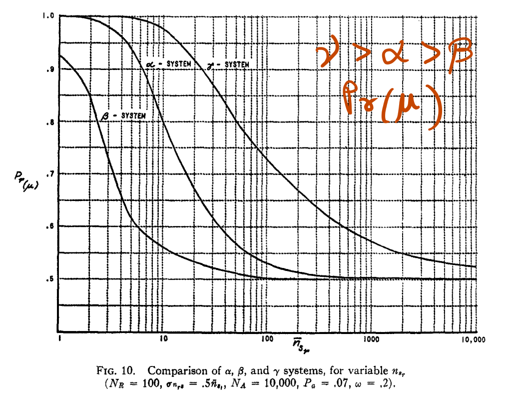
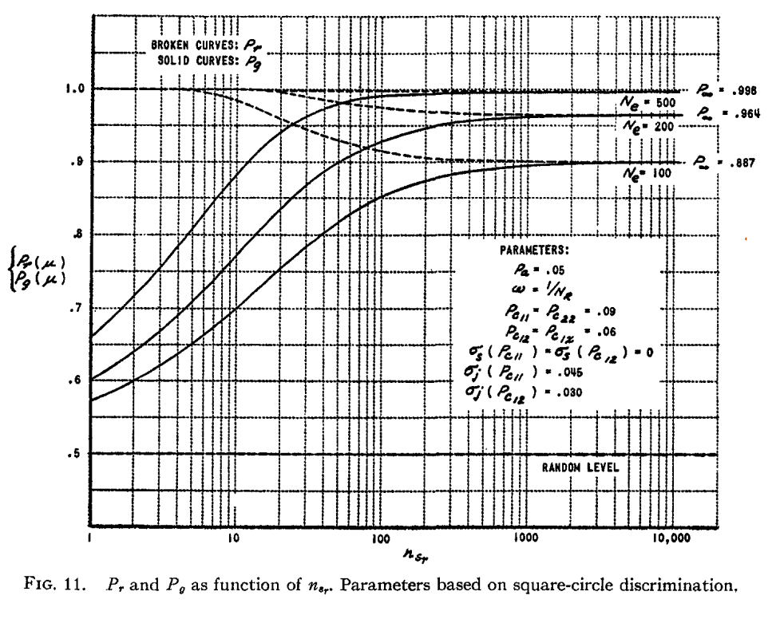

This article is a "broken down" version of the F. Rosenblatt's 1958 research paper on "The Perceptron: A Probabilistic Model For Information Storage And Organization In The Brain - 1958 (Cornell Aeronautical Laboratory)". It utilizes terminologies from the original research paper and provide additional examples for clearer understanding. This article stands as a complementary read to the original research paper and not as a standalone article of its own for the complete understanding of "The Perceptron".
~happy reading~
What is a Perceptron?
Perceptron is considered as the earliest form of neural network that provided the basis for the neuron/neural network we use today.
It is a state machine which use statistical separability to learn patterns and organize information in the network of connections to distinguish between patterns like square or circle.
The term Perceptron is coined by F. Rosenblatt in his research paper "The Perceptron: A Probabilistic Model For Information Storage And Organization In The Brain - 1958 (Cornell Aeronautical Laboratory)" and provided the complete information of how the machine works along with analysis of it's performance.
F. Rosenblatt argued that the symbolic logic and wiring diagrams don't represent the behavior of the neuron in the brain(aka biological intelligence) and hence he proposed a Probabilistic approach (Vs Deterministic approach) to tackle down the limitations of the other theory developed around that time.
The three fundamental questions...
F. Rosenblatt states that,
"to understand the capability of higher organisms for perceptual recognition, generalization, recall and thinking, we must first have answer to three fundamental question:"
How does the physical information is sensed or detected by the biological system?
In what form the information is stored, or remembered?
How does the information contained in storage, or in memory, influence recognition and behavior?
He clearly outlines the first question stating that,
"The first of these questions is in the province of sensory physiology, and is the only one for which appreciable understanding has been achieved. This article will be concerned primarily with the second and third questions, "
and so, this article too consider only the second and third question.
Q2: How is the information sensed or detected?
There are two hypothesis to understand the storage of information in any biological organism(around the 1950s),
Coded Representation:
This idea suggests that information is stored in coded form in memory with some sort of one-to-one relationship to the appropriate response.
This also suggests that if one can find code(wiring of information) then one can also reconstruct the memory just like developing a photographic negative.
This idea was easy to understand and implement using boolean or symbolic logic, because of which many theories of brain models at that time was built around this idea.
[Example: (1 26 7 8) -> square (but) (1 27 7 8) -> not square(may be circle?)]

Connectionist Representation:
This idea stems from the British Empiricism idea of memory and knowledge. Check it out it's cool.
According to this hypothesis the images/code of the stimuli is never recorded at all, rather the information is contained in the new connections or pathways in the central nervous system(CNS) which is activated by the stimuli.
This means there is no simple mapping between a stimuli and a response. But the pathway represent/trigger the appropriate response given the stimuli activate the specific nerve cells/neuron.

Q3: How is the information stored influence future recognition and behavior?
Based on the two types of information storage representation, there exist two hypothesis to define the influence of the stored information.
Based on coded information approach:
Information is stored in coded representation with a one-to-one map of sorts between a specific stimuli to a response.
This suggests that recognition of any stimuli leads to the approach of systematic comparisons between the stored stimuli-response pair to find the appropriate response.
It is like performing linear search in the brain cells and doesn't support the facts of biological recognition as we humans recognize patterns and images in an instant.

Based on the empiricist/connectionist approach:
This idea stems from the answer of the second question, where stimuli information is stored in the new connections or pathways and any new stimuli will make use of this new connection or pathways to trigger appropriate response while making the connection stronger.
This leads to the triggering of similar neural pathways for similar stimuli leading to the same responses. (different input squares of different sizes always results in the same response "square")

Okay with these hypothesis, Let us get to the perceptron. Right?
Here, the author takes the empiricist or connectionist approach to formulate/develop a theory for a hypothetical nervous system, the perceptron.
*(The term response can be defined as a resultant state which is distinguishable from the other responses. Like, two responses cannot state a given pattern is a square since we humans do not.)
At the time of formulating this theory, the symbolic logic and boolean algebra doesn't help/improve the development of the hypothetical nervous system for which the author believed the probabilistic approach holds the answer.
F. Rosenblatt was interested in the work of Hebb, a researcher whose work stood as suggestions for developing the perceptron. The main assumptions of Hebb's work are as follows,
The physical connections of the nervous system which are involved for learning and recognition are not identical from one organism to another.
The original system of connected cells have only certain amount of plasticity. (plasticity refers to the strength of connections)
Exposure to a large sample of the same stimuli will tend to form pathways to the same set of responding cells and stimuli which are dissimilar will form pathways on a different set of cells.
The application of positive/negative reinforcement may lead to strengthening or weakening of the connections between the network of cells.
Similar stimuli will have the tendency to invoke the same sets of cells while also strengthening the connections between the cells and the responses.
Organization of the Perceptron:
The organization of perceptron by F. Rosenblatt has the following units:
S units: They act as the stimuli impinged on the retina(just like the intensity of light passing through our retina). In other words they are simple input units.
A units: They are called association units(A) which are present in the projection area(). The projection area may be ignored in some models.
A units may have any number of inputs from the S units and may transmit/output to any number of other A units.
The A unit has a certain threshold() above which the A units fire on a all or nothing basis(i.e, it either reaches the threshold and fire or don't)
The set of S units connected to a A unit is called as origin point and they appear to be focalized to the A unit as we see in the nervous system(biologically).
The connections in the origin point may be excitatory or inhibitory in their effect on the A unit.
If the algebraic sum(+) of the excitatory and inhibitory(considered as a negative value) impulse greater than or equal to a given threshold(θ), then the A unit fires.
Mathematically,
The connection between S units and A units are localized and unidirectional in nature(allows only forward pass of information).
The A units from the projection area() is connected to another set of A units in the association area().
The connections between the A units of the projection area and association area is random in nature and are unidirectional.
You may ask why random connections? the answer: as it leads to the reduction of initial bias towards a response for any given task.
R units: R units are the response units of a network, they can be n_number of response units and are considered mutually exclusive. i.e, occurrence of one response forbids the occurrence of others. In simple terms they are the output units with only one result.
Finally the A units from the association area() transmit to the Response units and the connections are random and bidirectional in nature.
The set of A units transmitting to a given response is called as the source-set of that response.
The bidirectional connections are for feedback from the response to adjust the weights/strength of the connection/pathway to that response.
Feedback connections:
The feedback from the response can be either of the following:
Excitatory feedback to the cells of it's own source set.
Inhibitory feedback to the cells of the complement of it's own source set.
The first method seems easy and practical as it only needs to adjust the values of it's own source set.
But what does the feedback look like?
Every A unit has a value(V) which the author terms as amplitude or frequency, but we can consider it as weight where it can be increased or decreased to mirror reward and punishment framework.
Three Models of Perceptron(The α, β and γ System)
The three models of perceptron or any learning model in general are functionally the same but differ in the way they reward or punish every correct or wrong response respectively.
System: (The reward only system)
The alpha system rewards each active A unit in it's source set with a reward(V) of +1 for each correct response, while not punishing the inactive A units in it's source set.
System: (The constant feed system)
In the beta system, each source set is independently assigned a constant reward K(arbitrary value) to be split across active A units of the dominant source set and the inactive A units of the non-dominant source set. (K is to be split separately for each source set. i.e, 2K of total reward for two class scenario like square or circle)
If the dominant source set has no active A units, then the reward is split across the inactive A units of the same source set. Since, the value needs to be split up after each iteration even if there is no active A units.
Example: Given a square stimuli, and the A units of the dominant source set are all inactive (i.e, they say it is not a square) then by the definition of beta system, the inactive A units will be rewarded equally even though the whole source set is wrong and vice versa for the other source sets.
System: (The parasitic system)
The gamma system only deals with the dominant set unlike beta system. the inactive A units in the dominant source set are punished(V < 0) while the active A units are rewarded(V > 0, typically +1).
The active units gains the reward on the expense of the value diminished on the inactive A units in the source set. This is said to be parasitic nature.
Example:
Characteristics of α, β and γ system:

Phases of analysis:
The perceptron can be analyzed on either of the two phases.
The Predominant phase: In this phase, some proportion of A units respond to the stimulus but all the response units are still inactive(consider it as, in-computing stage and the results are not out yet).
The Postdominant phase: In this phase one of the response units are active and all others are inactive.(consider it as, computed and the results are out phase)
Analysis of the Predominant phase:
The perceptron considered here always have a fixed threshold() for the activation of A units. In order to find the learning curve for a fixed threshold perceptron, two variables are found to be of primary importance.
The probability of activation : is the probability that a randomly selected A unit fires in the system fires.
and
Where,
R = Proportion of the S-points activated by the stimulus
x = Number of excitatory connection to each A-unit (fixed)
y = Number of inhibitory connection to each A-unit (fixed)
e = Number of active excitatory connection (vary by stimuli)
i = Number of active inhibitory connection (vary by stimuli)
= Threshold of A unit
condition:
Note: Neurons in our brain have fixed number of excitatory and inhibitory connection, for which the author tried to mimic it in here(i.e, the value of x and y).
The conditional probability : is the conditional probability that given an A unit fired for stimuli will also fire for stimuli (i.e, A unit fire for both and ).
High is expected for intraclass stimuli and Low is expected for interclass stimuli for better performance.
Where,
= the number of "lost" excitatory connections (connections that were illuminated by but are not illuminated by ).
= the number of "lost" inhibitory connections (connections that were illuminated by but are not illuminated by ).
= the number of "gained" excitatory connections (connections that were not illuminated by but are illuminated by ).
= the number of "gained" inhibitory connections (connections that were not illuminated by but are illuminated by ).
condition:
Note: There goes a lot of math in here and I know a lot is going on in your head right now. But here is an example to make you understand better.
As said earlier, Neurons in our brain have fixed number of excitatory and inhibitory connection, for which the author tried to mimic it in here(i.e, the value of x and y).
Fixed x and y helps to reduce bias by not having difference in the number of connections between the S units and A units in the projection area. [like , in this case the response is biased towards which is connected to due to increased number of x connections.]
Important Characteristics of and :
Value of can be reduced in magnitude by either increasing the threshold() or by increasing the number of inhibitory connections (aka y value). Refer Fig 4(a)
When x >> y, underfitting takes place where is always close to unity as x takes the dominance in the threshold equation.
When y >> x, overfitting takes place where is mostly close to zero(0) as inhibitory effect takes dominance and model acts more specific to the response it provides.
When x == y, it may not overfit or underfit but performs the best given equal number of stimuli for all the responses to train on.
*The modern terminology of fitting is used to help understand the characteristics of the system while the author may not have explicitly mentioned in his original work.


Analysis of the Postdominant phase:
There exists two types of system to calculate the dominant response in the postdominant phase.
Sum Discriminative System() : The response whose input put in the highest net value(V) dominates.
Mean Discriminative System() : The response with the highest mean value() dominates.
The mean discriminative system is considered better in most cases as it reduces bias in the training phase consisting of imbalanced data set.
This acts like the activation part.
Performance analysis in the postdominant phase:
(Probability of correct choice of response): Recall
The recall provides information of whether the system can
identify the exact same stimuli again. Just like memorizing the same pattern.
(Probability of correct generalization): Generalization
It measures the ability of the system to learn the patterns of a given class such that the system chooses the correct response given a new stimuli it has never seen before (i.e, not identical).
Condition for generalization. (i.e, intraclass activation should be greater than interclass activation for generalized learning).
The author investigated and found out a single equation which gives a close approximation of and , if appropriate constants are passed in it.
Where,
= Normal curve integral from to Z (In other words: cumulative normal distribution function of Z)
= Probability that, at least one of the A unit is active in the dominant source set. (higher the probability, higher the generalization and recall)
where the constants is chosen through extensive analysis by the author for each system. (Refer the research paper). And by differing the constants we get the value approximates for and .
Environment of Learning:
Ideal Environment: This was the environment used for initial performance measure by the author and the following assumptions are made.
Each stimuli is unique and random.
There is no intrinsic similarity between the stimuli of one another(just like randomly illuminated spots on the retina).
Arbitrary Responses: The responses are forced during the learning phase. For example the first 100 stimuli is considered R1 and the next 100 is considered as R2.
The Probability of recall plays a major role in this environment to memorize random stimuli as there are no patterns to relate between them.
Differential Environment: It mimics real world scenarios. It provides the true performance measure.
It has distinguishable classes to respond like square or circle instead of random points on the retina.
Similarity in Stimuli: Since the stimuli are similar to one another(like squares of different shapes(curved, straight) and sizes), they represent the same class whatsoever.
The Probability of generalization plays a major role as it defines the systems capability of learning patterns instead of memorizing.
Analysis on the Environments:
In an Ideal Environment: (Each stimuli is random, no patterns)
It is interesting in this stage that, as the number of stimuli attached to the responses(aka the count of the training data) increases the Probability of recall decreases and approaches a fixed asymptote at = 0.5.
This indicates that, the ability to memorize decreases as it tires to memorize increasing number of random stimuli patterns. and = 0.5 = Inability to remember the pattern seen before
You may ask why the asymptote at = 0.5. Remember the equation with the Normal Distribution where Z is the input. Z can have a minimum value of 0 for which the cumulative normal distribution value is 0.5 and so the specific asymptote. Test it out yourself.
The below graph shows the learning curve of the system.

In an Differentiable Environment: (Each class of stimuli has similarities)
Unlike an Ideal Environment, the learning increases as the number of stimuli attached to the responses(number of training data) increases and the Probability of generalization increases and in most cases approaches unity if the training data is large enough.
In other words, The system becomes a generalized learning machine, as it learns patterns instead of memorizing each stimuli.

Increasing the number of responses, slows down learning?
As the number of responses increases, the performance of the system decreases as the responses are mutually exclusive.
To overcome this, F. Rosenblatt suggests that we binary coding for the responses and make them mutually inclusive.
i.e, Each response has two outcomes either 1 or 0. and system can have multiple responses on at the same time.
Example: R1 -> tall or not tall, R2 -> fat or not fat, R3 -> straght or curved
By this method, 100 classes of stimuli can be represented by 7 responses as 2^7 = 128 (128 possible combination of stimuli classes).
Monovalent Vs Bivalent systems:
Monovalent systems only have positive reinforcement(like adding to the active A units in the source set while not punishing system for inactive A units.
Bivalent systems uses positive and negative reinforcement to essentially reward the active A units with and punish the inactive A units with .
The use of bivalent systems has been shown reduced bias towards a particular response by quantitative analysis.
Also such a bivalent system produces a more plausible appearance of a biological system(mimic of the brain nerves) which has been the goal of this research.
Improved Perceptron and Spontaneous Organization:
The perceptron discussed till now don't have temporal pattern recognition, which mean it can't process sequence of data/stimuli.
But if we introduce temporal trace of memory, then the system has the ability of process the current stimuli based the previous sequence of stimuli.(i.e, it can be use to analyze voice sequence, prediction of the next sentence or word given an input sentence -> this was a goal most theorist were trying to achieve during that time and now it resembles the modern Recurrent Neural Network (RNNs) and LLMs).
Also by arranging the A units or origin points in a particular order improves the perceptron ability to identify and learn contour patterns (like face shapes, etc...).
Introduction of a decay variable makes a striking new property emerge, the perceptron gains the ability to classify between two dissimilar classes(like square or circle) on it own(unsupervised learning behavior),. That is, it doesn't need the response labels during the learning phase.
The above mentioned characteristics/features was analyzed on a simulation of a perceptron in IBM 704 computer at Cornell Aeronautical Laboratory around the 1950s which includes F. Rosenblatt personal work before he joined Cornell Labs(around the 1940s-1950s).
Limitation of the Perceptron: Perceptron was good for classification of simple patterns like square or circle but it doesn't have the capability to perform classification on a task (like find the pattern on the left to the square). F. Rosenblatt stated this limitation as follows,
"Statistical separability alone does not provide a sufficient basis for higher order abstraction. Some system more advanced in principle than the perceptron, seems to be required at this point."
Summary and Conclusions:
The main conclusion of the theoretical study of perceptron is as follows: *(minimized version)
Note:IOWmeansIn Other Words
In an environment of random stimuli, a system consisting of randomly connected units can learn to associate specific responses to specific stimuli.
IOW: It can learn to strengthen specific connections stronger for specific stimuli, even for a random stimuli of classes.
In such an "Ideal environment," the probability of a correct response diminishes towards its original random level as the number of stimuli learned increases.
IOW: In an Ideal environment, the system cannot memorize more and more random pattern, so the learning curve diminishes as the number of random stimuli fed increases.
In such an Ideal environment, no basis of generalization exists.
IOW: Generalization (the ability to learn patterns instead of memorizing each stimuli) doesn't exist in such an ideal environment.
In a "differentiated environment," where each response is associated to a distinct class of mutually correlated, or "similar" stimuli, the probability that a learned association of some specific stimulus will be correctly retained, typically approaches a better-than-chance asymptote as the number of the stimuli learned by the system increases. This asymptote can be made arbitrarily close to unity by increasing the number of association cells in the system.
IOW: In an differentiated system, the stimuli are differentiable and not random(i.e, square or circle). And provided such system, the perceptron gains the ability to remember patterns as the number of stimuli(training data) increases. Also by increasing the number association cells(aka A units) (increase in the number of neurons) we can achieve 100% accuracy on classification (arbitrarily).
In the differentiated environment, the probability that a stimulus which has not been seen before will be correctly recognized and associated to its appropriate class (the probability of correct generalization) approaches the same asymptote as the probability of a correct response to a previously reinforced stimulus. This asymptote will be better than chance if the inequality is met, for the stimulus classes in question.
IOW: The condition is the condition for generalization. This statement tells that in a differentiable environment, the perceptron always learn to distinguish between stimuli with a better-than-chance probability as the number of stimuli(training data) increases.
The performance of the system can be improved by the use of a contour-sensitive projection area, and by the use of a binary response system, in which each response corresponds to some independent feature or attribute of the stimulus.
IOW: The performance of the perceptron can be increased by introducing better arrangement of association units to recognize contour patterns and by using binary coding of responses to reduce the number of response units.
Trial-and-error learning is possible in bivalent reinforcement systems.
IOW: The above statement is simple enough to understand!!!
Temporal organizations of both stimulus patterns and responses can be learned by a system which uses only an extension of the original principles of statistical separability, without introducing any major complications in the organization of the system.
IOW: Temporal pattern recognition (sequence analysis of patterns) can be introduced in the statistical separability machine (the perceptron) without any major modifications to the system.
The memory of the perceptron is distributed, in the sense that any association may make use of a large proportion of the cells in the system, and the removal of a portion of the association system would not have an appreciable effect on the performance of any one discrimination or association, but would begin to show up as a general deficit in all learned associations.
IOW: The memory (aka the weights of the connection V) is distributed across all the A units in the association area. If we remove some of it, then the whole system loses some ability to recognize the pattern classes to a slight extent, but re-adjust itself to classify patterns again with better accuracy.
Simple cognitive sets, selective recall, and spontaneous recognition of the classes present in a given environment are possible. The recognition of relationships in space and time, however, seems to represent a limit to the perceptron's ability to form cognitive abstractions.
IOW: The perceptron model discussed above is capable of classification but still not capable of selective recall (like recognizing our friend after a year on a beach just by seeing the face). This presents a limitation or need for some higher order mechanism for the perceptron to form cognitive abstraction.
End Note by F. Rosenblatt:
"By the study of systems such as the perceptron, it is hoped that those fundamental laws of organization which are common to all information handling systems, machines and men included, may eventually be understood."